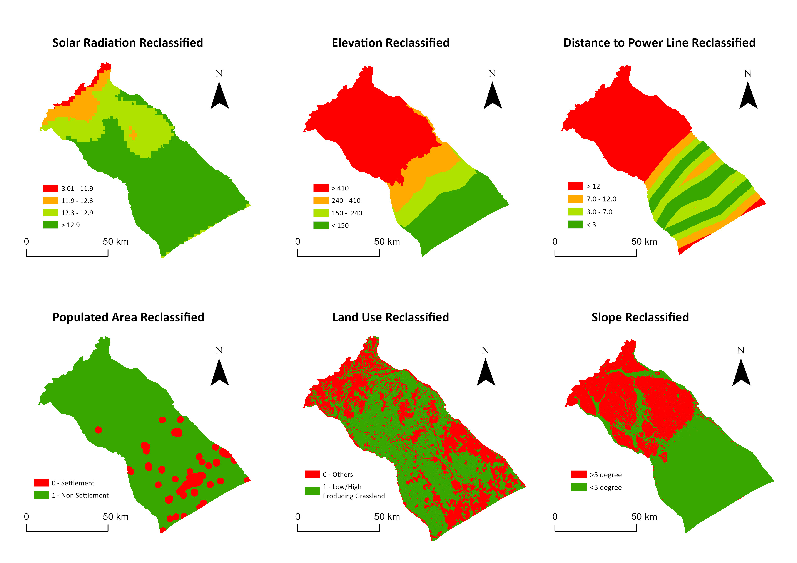
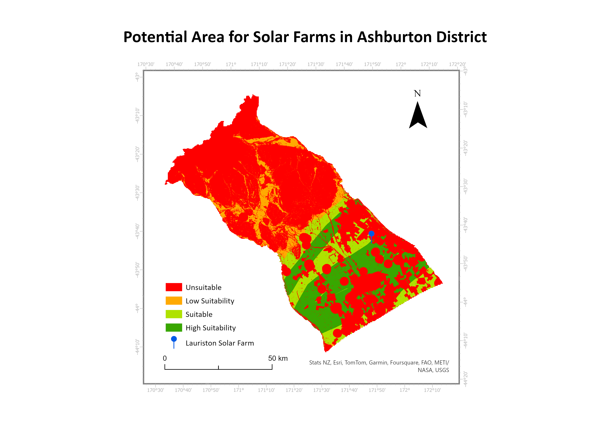
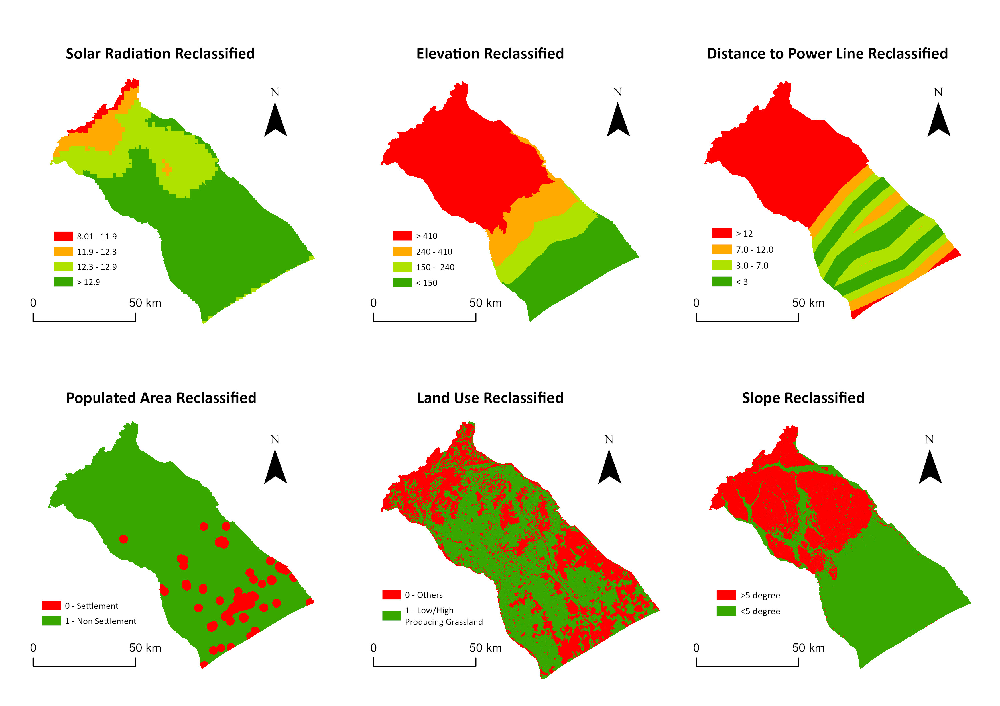
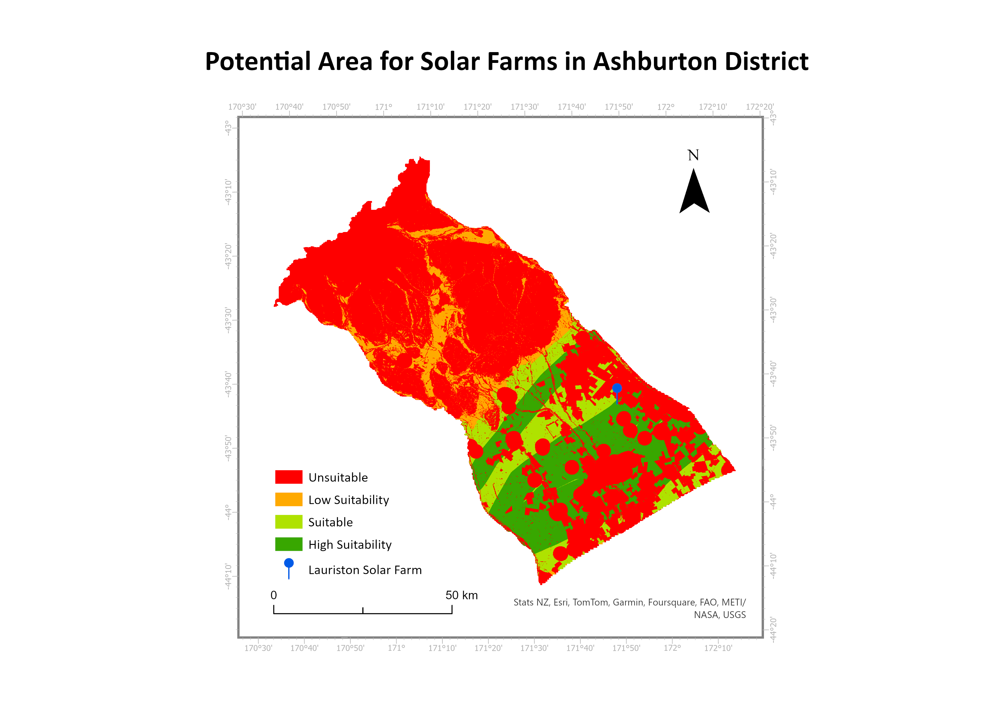

Using GIS to locate potential area for solar farms in Ashburton District
 



The purpose of this analysis was to locate potential areas for solar farm sites in Ashburton District, particularly focusing on livestock farmland. Geographic Information System (GIS) was used as a tool to consider multiple spatial criteria and constraint factors to locate potential areas for solar farm.
- . Geographic Information System (GIS) was used as a tool to consider multiple spatial criteria and constraint factors to locate potential areas for solar farm.
- First, weighted score of selected criteria, including elevation, solar radiation, and distance to transmission lines of study area were obtained.
- The resulting layer was then analysed with constraint factors to exclude land types that are not low producing or high producing grassland, zones within 2000m of populated areas, and a slope greater than 5 degrees.
- From our analysis, 950.13km2 out of the 6,181.45 km2 of the study area were considered as highly suitable for potential solar farm locations.
- Built by Kassi Yan with ♥-